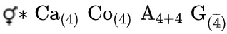

Материал из Википедии — свободной энциклопедии
Брусни́ка (лат. Vaccínium vítis-idaéa) — вечнозелёный кустарничек, вид рода Вакциниум (Vaccinium) семейства Вересковые.
Видовое название vitis-idaea в переводе собственно означает — «виноградная лоза с горы Ида» (остров Крит). Название vitis-idaea для брусники впервые приводится у Додонеуса и Геснера. Античные писатели бруснику не упоминали.
Корневище ползучее горизонтальное с приподнимающимися ветвистыми побегами высотой 15—20 см[2].
Кустики брусники, побеги которой иногда должны прокладывать себе дорогу в гнилом пне между корой и древесиной, могут достигать в длину 1 м, между тем как растущие рядом на земле имеют обычно высоту от 8 до 15 см.
Цветки на коротких цветоножках обоеполые правильные, собранные по 10—20 в верхушечные густые поникающие кисти[2]. Венчик 4—6,5 мм длины, белый или бледно-розовый, спайнолепестный, колокольчатый, с четырьмя несколько отклонёнными лопастями. Чашечка четырёхраздельная с короткими треугольными красноватыми долями. Тычинок восемь, с расширенными волосистыми нитями. Пестик один, со столбиком, немного превышающим венчик. Завязь нижняя. Венчики брусники во время цветения поникают, это защищает пыльцу от сырости. В пыльниках пыльца находится в виде плотной массы, но понемногу разрыхляется и высыпается порциями через дырочки, расположенные на концах пыльников. Цветёт в конце весны — начале лета около 15 дней[2].
Формула цветка 
Пыльцевые зёрна расположены в тетраэдрических тетрадах, имеют почти шаровидную форму. Длина полярной оси отдельного зерна 23—30 мкм, экваториальный диаметр 30—39 мкм. В очертании округло-треугольные, 42—45 мкм в диаметре. Борозды соприкасаются между собой, длина полуборозды 13—17 мкм, ширина 4,5—6,5 мкм; края борозд ровные, концы слегка оттянуты, притуплены и направлены в сторону дистальной поверхности; мембрана борозд гладкая. Экзина покровная, толщиной 0,7—1 мкм. Текстура пятнистая. Пыльца тёмно-серого цвета[2].
Плоды — красные многосемянные шаровидные блестящие ягоды до 8 мм в диаметре, несущие на верхушке засохшую чашечку, кисло-сладкого вкуса. Семена красновато-бурые, слегка полулунной формы. Плоды созревают в августе — сентябре[4], после первых заморозков становятся мягкими и водянистыми (и не транспортабельными), могут перезимовать под снегом до весны, но весной ягоды падают от малейшего прикосновения.